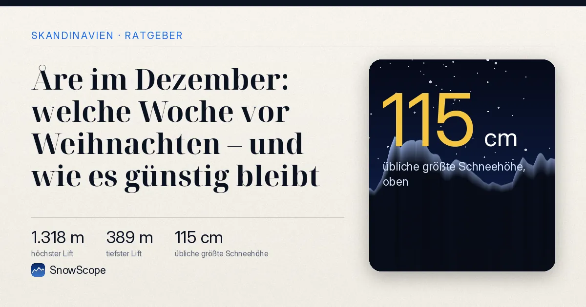

Åre im Dezember: welche Woche vor Weihnachten – und wie es günstig bleibt
Åre ist der bekannteste Skiort Skandinaviens, mit 116 km kartierten Pisten, 48 Liften und 928 m Höhenunterschied. Für den Dezember gibt unsere Schneehistorie über 46 Winter eine klare Antwort: die zweite Monatshälfte buchen. In der Woche vom 15. bis 21. Dezember hatten 89 % der Winter an der Mittelstation (853 m) mindestens 30 cm, in der ersten Woche nur 61 %.
Die Live-Schneeprognose für Åre in der SnowScope-AppSchneehöhen, Pulverschnee-Alarme und 3D-Karte, gratis.
Eine Woche vor Weihnachten – und das Geld
Die Skipässe für Åre werden mit dynamischen Preisen im offiziellen Onlineshop des Betreibers verkauft; am 13. November 2026 konnten wir dort keinen festen Betrag ablesen, daher nennen wir keinen. Was wir sagen können: Bei datumsabhängigen Preisen sind die ruhigen Wochen vor den Weihnachtsferien das Ziel, und früh online kaufen ist der wichtigste Hebel, den du selbst in der Hand hast.
Der andere große Kostenpunkt in Åre ist das Bett. Buch es passend zu der Woche, die du nach den Schneezahlen unten wählst – nicht umgekehrt.


Welche Dezemberwoche
An der Mittelstation steigt der Anteil der Winter mit mindestens 30 cm von 61 % vom 1. bis 7. Dezember auf 76 % vom 8. bis 14., 89 % vom 15. bis 21. und 93 % in der Weihnachtswoche. Ein typischer 15. Dezember bringt 34 cm im Tal, 40 cm an der Mittelstation und 46 cm am Gipfel.
Die Woche vom 15. bis 21. Dezember ist also der beste Kompromiss: fast Weihnachts-Schneechancen, vor dem Ferienandrang.
Höhe zählt – aber weniger als gedacht
Åre ist ein Berg am See Åresjön, und im Dezember ist sein Schnee von unten bis oben gleichmäßiger als in den Alpen: 34 cm auf 389 m, 46 cm auf 1318 m an einem typischen 15. Dezember. Oben ist es zudem windig, die zusätzliche Höhe bedeutet also nicht immer mehr Schnee.
Verändert hat sich der Gipfel. Sein Dezembermittel fiel von 69 cm in den ersten 15 Wintern auf 36 cm in den letzten 15, und der Anteil der Weihnachtswochen mit 30 cm dort oben sank von 100 % auf 80 %. Die Mittelstation verlor weniger an Höhe, aber gleich viel an Chancen.
Plan B: Vemdalsskalet
Vemdalsskalet weiter südlich in Härjedalen ist die kleinere, ruhigere Alternative vieler schwedischer Familien. Sein Dezemberschnee ist dünner: 33 cm an der Mittelstation an einem typischen 15. Dezember und 63 % der Winter mit 30 cm in der Woche vom 15. bis 21. Dezember. Auch dort sind die Preise dynamisch, einen festen konnten wir nicht ablesen.
Im Dezember bietet Åre bessere Chancen und viel mehr Skigebiet bei ähnlichem Preismodell. Vemdalen ergibt ab Januar mehr Sinn.
Tipps für Skifahrer
- Den 15. bis 21. Dezember buchen: 89 % unserer Winter hatten in dieser Woche 30 cm an der Mittelstation, gegen 61 % in der ersten Woche.
- Den Skipass online, früh und außerhalb der Ferientermine kaufen; die Preise folgen der Nachfrage.
- An windigen Tagen die tieferen, geschützten Abfahrten fahren; der Gipfel ist ausgesetzt.
- Kurze Dezembertage: das Skifahren nach dem Licht planen und vor Touren abseits der Piste die schwedische Lawinenprognose lesen.
Weitere Karten (externe Seiten)
Quellen und Nachweise
- Åre: official lift-pass page of the operator (prices by date; no fixed price quoted), checked 13 November 2026 www.skistar.com/en/winter/skipass/buy-skipass/lift-pass-are/
- Vemdalsskalet: official lift-pass page of the operator (prices by date; no fixed price quoted), checked 13 November 2026 www.skistar.com/en/winter/skipass/buy-skipass/lift-pass-vemdalen/
Zu diesen Zahlen
Schneewerte: SnowScope-Schneehistorie, 46 vergangene Winter (1980-81 bis 2025-26) auf den Höhen des Skigebiets, höhenkorrigiert (eine Schätzung für eine Fläche, keine Meldungen des Skigebiets); „guter Schnee“ = im Wochenmittel 30 cm oder mehr am Boden. Karte: unsere übliche Schneehöhe am 15. Dezember, nach Höhe auf das Gelände verteilt. Pisten und Lifte: OpenSkiMap-Kartierung. Skipasspreise: offizielle Preislisten der Skigebiete, geprüft am 13. November 2026; Preise können sich ändern.
Offizielle Lawinenlageberichte: Lavinprognoser (Naturvårdsverket)
Diesen Bericht zitieren
Für Forschung, Lehre oder Presse: Zahlen und Grafiken sind unter CC BY 4.0 mit dieser Quellenangabe frei nutzbar.
SnowScope (2026), Åre im Dezember: welche Woche vor Weihnachten – und wie es günstig bleibt, https://snowscope.app/blog/de/2026/11/are-december-skiing-sweden-price-snow.html, abgerufen am 2026-11-14
SnowScope (Atlas Labs). (2026, November 14). Åre im Dezember: welche Woche vor Weihnachten – und wie es günstig bleibt. SnowScope snow reports. https://snowscope.app/blog/de/2026/11/are-december-skiing-sweden-price-snow.html
BibTeX
@misc{snowscope2026aredecemberskiingswedenp,
author = {{SnowScope (Atlas Labs)}},
title = {Åre im Dezember: welche Woche vor Weihnachten – und wie es günstig bleibt},
year = {2026},
month = nov,
howpublished = {\url{https://snowscope.app/blog/de/2026/11/are-december-skiing-sweden-price-snow.html}},
note = {Published 2026-11-14 12:34 UTC; accessed 2026-11-14}
}· CC BY 4.0 · Methoden, Daten und Werkzeuge →
Åre: Schnee und Temperatur nach Höhe, dieser Winter vs letzter (Werkzeuge) →
Åre folgen
Gratis: eine Nachricht, wenn Neuschnee kommt, und jeden Morgen die Vorhersage.